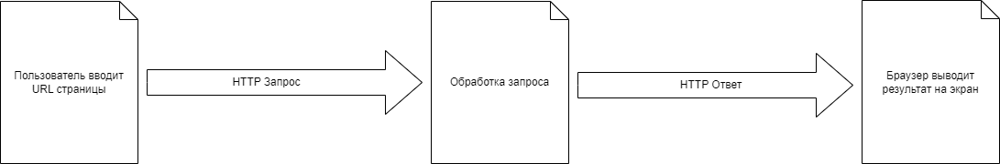

а) Описать путь получения пользователем web страницы, разместить ответ в ненумерованном списке. Пользователь в адресной строке вводит адрес сайта, что происходит далее.
- Операционная система делает запрос на веб сервер.
- На веб сервере этот запрос обрабатывается.
- Браузер получает овет с веб сервера и выведет результат на экран.
Чтобы сделать запрос по указанному адресу, браузеру нужно знать IP сервера. Первым делом он смотрим в свой локальный кэш DNS. Если там его нет то запрос идёт дальше по цепочке серверов DNS.
Таким образом выглядет путь получения пользователем web страницы.